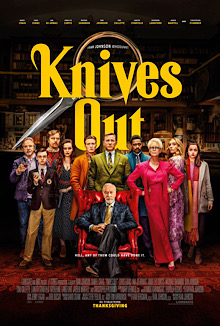
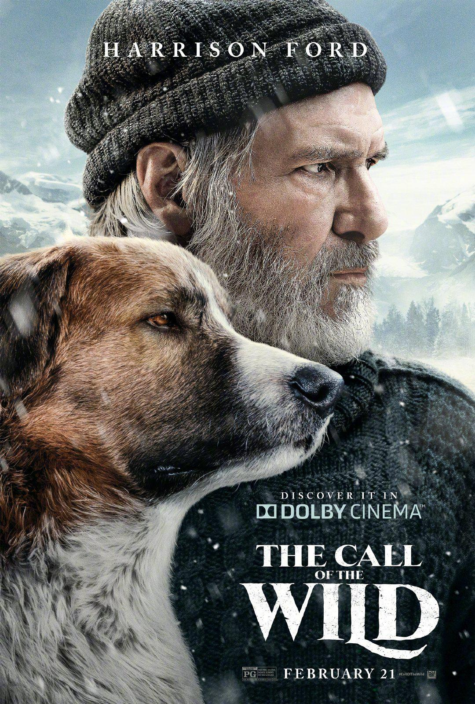

Knives Out
Knives Out is a 2019 American mystery film written and directed by Rian Johnson, and produced by Johnson and Ram Bergman. A modern whodunit, the film follows a master detective investigating the patriarch's death after a family gathering gone awry. The film features an ensemble cast, including Daniel Craig, Chris Evans, Ana de Armas, Jamie Lee Curtis, Michael Shannon, Don Johnson, Toni Collette, Lakeith Stanfield, Katherine Langford, Jaeden Martell, and Christopher Plummer.
- Directed by: Rian Johnson
- Produced by: Ram Bergman & Rian Johnson
- Written by: Rian Johnson
- Starring: Daniel Craig, Chris Evans, Ana de Armas, Jamie Lee Curtis, Michael Shannon, Don Johnson, Toni Collette, Lakeith Stanfield, Katherine Langford, Jaeden Martell, Christopher Plummer
- Music by: Nathan Johnson
- Cinematography: Steve Yedlin
- Edited by: Bob Ducsay
- Production companies: MRC, T-Street
Crawl
Crawl is a 2019 American disaster horror film directed by Alexandre Aja and written by Michael and Shawn Rasmussen. It stars Kaya Scodelario and Barry Pepper as a daughter and father, who along with their dog are hunted by alligators after becoming trapped in their home during a Category 5 hurricane.
- Directed by: Alexandre Aja
- Produced by: Craig J. Flores, Sam Raimi, Alexandre Aja
- Written by: Michael Rasmussen, Shawn Rasmussen
- Starring: Kaya Scodelario, Barry Pepper
- Music by: Max Aruj, Steffen Thum
- Cinematography: Maxime Alexandre
- Edited by: Elliot Greenberg
- Production companies: Raimi Productions, Fire Axe Pictures
The Call Of The Wild
The Call of the Wild is a 2020 American adventure film based on the Jack London 1903 novel of the same name and on Twentieth Century Pictures' 1935 film adaptation. Directed by Chris Sanders, in his live-action directorial debut, and his first film without a co-director, the film was written by Michael Green, and stars Harrison Ford, Dan Stevens, Omar Sy, Karen Gillan, Bradley Whitford, and Colin Woodell. Set during the 1890s Klondike Gold Rush, the film follows a dog named Buck as he is stolen from his home in California and sent to the Yukon, where he befriends an old outdoorsman and begins a life-altering adventure.
- Directed by: Chris Sanders
- Produced by: Erwin Stoff, James Mangold
- Screenplay by: Michael Green
- Based on: The Call of the Wild by Jack London
- Starring: Harrison Ford, Omar Sy, Dan Stevens, Karen Gillan, Bradley Whitford
- Music by: John Powell
- Cinematography: Janusz Kamiński
- Edited by: William Hoy, David Heinz
- Production companies: TSG Entertainment, 3 Arts Entertainment
Spies in Disguise

Spies in Disguise is a 2019 American computer-animated spy comedy film produced by Blue Sky Studios and distributed by 20th Century Fox. Loosely based on the 2009 animated short Pigeon: Impossible by Lucas Martell, the film is directed by Troy Quane and Nick Bruno (in their feature directorial debuts) from a screenplay by Brad Copeland and Lloyd Taylor, and a story by Cindy Davis. It stars the voices of Will Smith and Tom Holland, alongside Rashida Jones, Ben Mendelsohn, Reba McEntire, Rachel Brosnahan, Karen Gillan, DJ Khaled, and Masi Oka in supporting roles. The plot follows a secret agent (Smith) who is accidentally transformed into a pigeon by an intelligent young scientist (Holland); the two must then work together to stop a revenge-seeking cybernetic terrorist, and return the agent to his human form.
- Directed by: Troy Quane, Nick Bruno
- Produced by: Peter Chernin, Jenno Topping, Michael J. Travers
- Screenplay by: Brad Copeland, Lloyd Taylor
- Story by: Cindy Davis
- Based on: Pigeon: Impossible by Lucas Martell
- Starring: Will Smith, Tom Holland
- Music by: Theodore Shapiro
- Edited by: Randy Trager, Christopher Campbell
- Production companies: Blue Sky Studios, 20th Century Fox Animation, Chernin Entertainment
Marriage Story

Marriage Story is a 2019 drama film written, directed, and produced by Noah Baumbach. It stars Scarlett Johansson and Adam Driver, with Laura Dern, Alan Alda, Ray Liotta, Julie Hagerty, and Merritt Wever in supporting roles. The film follows a married couple, an actress and a stage director (Johansson and Driver), going through a coast-to-coast divorce.
- Directed by: Noah Baumbach
- Produced by: David Heyman & Noah Baumbach
- Written by: Noah Baumbach
- Starring: Scarlett Johansson, Adam Driver, Laura Dern, Alan Alda, Ray Liotta, Julie Hagerty, Merrit Wever
- Music by: Randy Ryan
- Cinematography: Robbie Ryan
- Edited by: Jennifer Lame
- Production companies: Heyday Films